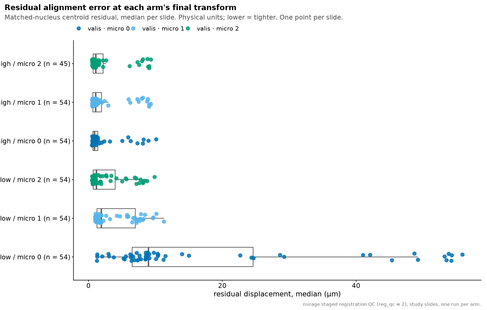
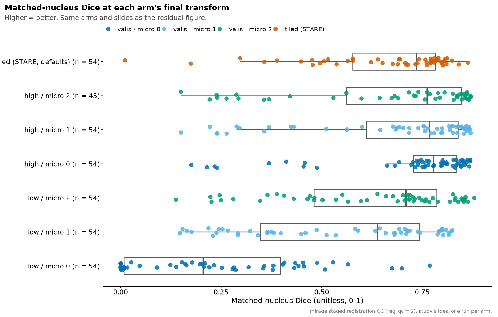
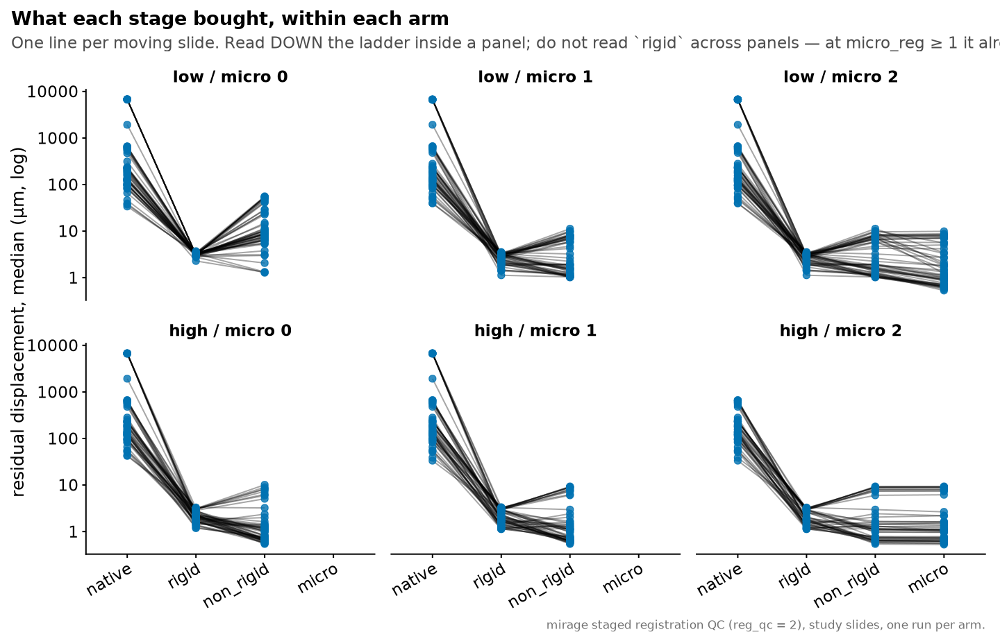
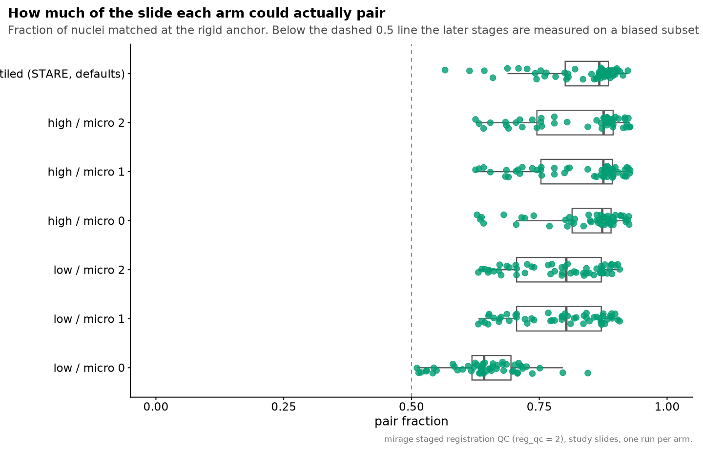
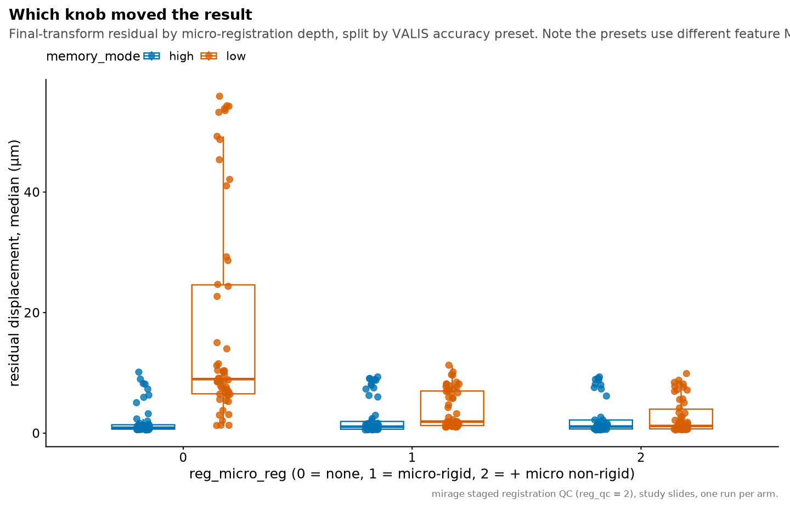
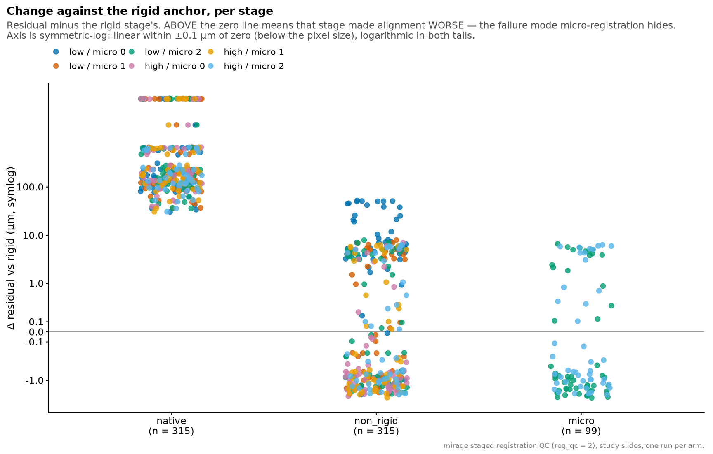
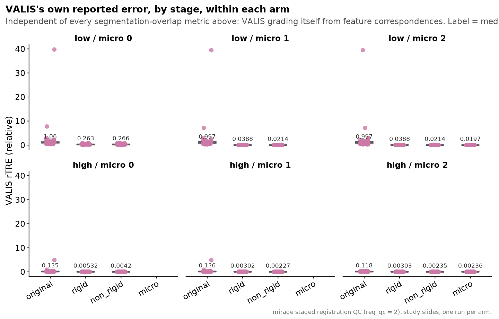
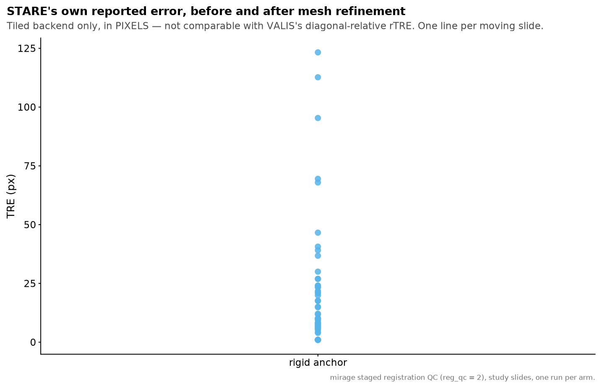

Last updated: 2026-08-25
Checks: 7 0
Knit directory: ihc_method/
This reproducible R Markdown analysis was created with workflowr (version 1.7.2). The Checks tab describes the reproducibility checks that were applied when the results were created. The Past versions tab lists the development history.
Great! Since the R Markdown file has been committed to the Git repository, you know the exact version of the code that produced these results.
Great job! The global environment was empty. Objects defined in the global environment can affect the analysis in your R Markdown file in unknown ways. For reproduciblity it’s best to always run the code in an empty environment.
The command set.seed(20260630) was run prior to running
the code in the R Markdown file. Setting a seed ensures that any results
that rely on randomness, e.g. subsampling or permutations, are
reproducible.
Great job! Recording the operating system, R version, and package versions is critical for reproducibility.
Nice! There were no cached chunks for this analysis, so you can be confident that you successfully produced the results during this run.
Great job! Using relative paths to the files within your workflowr project makes it easier to run your code on other machines.
Great! You are using Git for version control. Tracking code development and connecting the code version to the results is critical for reproducibility.
The results in this page were generated with repository version a1f4dbc. See the Past versions tab to see a history of the changes made to the R Markdown and HTML files.
Note that you need to be careful to ensure that all relevant files for
the analysis have been committed to Git prior to generating the results
(you can use wflow_publish or
wflow_git_commit). workflowr only checks the R Markdown
file, but you know if there are other scripts or data files that it
depends on. Below is the status of the Git repository when the results
were generated:
Ignored files:
Ignored: .Rhistory
Ignored: .Rproj.user/
Ignored: data/
Ignored: output/figures/
Ignored: renv/library/
Ignored: renv/staging/
Note that any generated files, e.g. HTML, png, CSS, etc., are not included in this status report because it is ok for generated content to have uncommitted changes.
These are the previous versions of the repository in which changes were
made to the R Markdown (analysis/registration_arms.Rmd) and
HTML (docs/registration_arms.html) files. If you’ve
configured a remote Git repository (see ?wflow_git_remote),
click on the hyperlinks in the table below to view the files as they
were in that past version.
| File | Version | Author | Date | Message |
|---|---|---|---|---|
| html | 3ad97a4 | sceriff0 | 2026-08-24 | :wrench: improving plots |
| Rmd | 2e30592 | bolt3x | 2026-08-24 | :recycle: import the seven tidyverse packages we use, not the metapackage |
| Rmd | 5409baf | bolt3x | 2026-08-24 | :art: split the crowded panels and put the registration axes on readable scales |
| Rmd | 469205b | bolt3x | 2026-08-17 | :recycle: route every figure through the shared scales, widths and n helpers |
| html | 8e6abe3 | sceriff0 | 2026-08-12 | :wrench: full site, let’s go |
| html | c5d0eaa | sceriff0 | 2026-08-12 | Revert ":wrench: built the site" |
| html | 70924d7 | sceriff0 | 2026-08-12 | :wrench: built the site |
| Rmd | 360ee92 | bolt3x | 2026-08-12 | :recycle: reorganise the workflowr site into four ordered parts |
| Rmd | d8c9575 | bolt3x | 2026-08-11 | :sparkles: rank registration configurations on the real slides, not the sweep |
The study slides, registered once per configuration. Three pages now read registration accuracy and they answer different questions — this one answers which configuration do we ship, and what does it buy?
| page | data | question |
|---|---|---|
| Registration accuracy | mirage’s benchmarks/ sweep on
synthetic images with a known injected offset |
how does cost and accuracy scale? |
| Run QC | one run on the study slides | was this cohort registered well enough to analyse? |
| this page | the study slides, N runs, one per arm | which configuration, and what does each knob buy? |
The manuscript’s registration-accuracy figure needs this page, not the sweep: an arm ranking measured on real tissue rather than on a synthetic offset.
Two VALIS knobs, crossed:
memory_mode — the VALIS accuracy
preset. low is BRISK/RANSAC at small dimensions;
high is SuperPoint/SuperGlue at larger ones. These are
different feature matchers, not one matcher at two
resolutions — worth stating plainly, because a figure legend that says
otherwise is describing a different experiment.reg_micro_reg — micro-registration
depth, nested, not a boolean: 0 =
none, 1 = micro-rigid only (refines slide.M),
2 = additionally micro non-rigid
(register_micro).Crossing them gives 2 × 3 = six arms, not the 2 × 2 an on/off reading would.
Plus a backend comparator, on a different axis:
registration_method = tiled — STARE,
at defaults. A different backend: JVM-free, internally tiled,
runnable on a laptop. memory_mode and
reg_micro_reg are VALIS-only params, so a
tiled arm has neither and carries NA for both. It is not a
seventh cell of the preset × depth grid; it is one point of comparison
against the whole grid.Why a cross-backend comparison is legitimate at all.
The segmentation-overlap scorer is method-agnostic —
bin/warp_seg_qc.py takes --method and builds
its warper from either a VALIS registrar pickle or a STARE transform
manifest — so the metric is the same measurement in both cases. That is
the one thing that makes “which backend aligns better” answerable
here.
What is not comparable is the stage axis.
lib/WarpBackends.groovy declares one stage list per backend
and they are different vocabularies:
| backend | stages |
|---|---|
valis |
native → rigid → non_rigid → micro |
tiled |
native → rigid → refined |
Only native is shared as both a spelling and a meaning.
rigid is shared as a word and not as an
operation: for VALIS it is the affine transform
(composed with micro-rigid at depth ≥ 1); for STARE it is the coarse
global anchor before mesh refinement.
And each backend reports its own error in its own units, in
its own file. VALIS writes rTRE (a fraction of the image
diagonal) or a raw distance to registered/summary/*.csv;
STARE writes TRE in pixels to
qc/registration/*_tre.json, with a per-tile breakdown VALIS
has no equivalent of. Those get separate figures here, never a shared
axis — a pixel TRE beside a diagonal-relative rTRE is a unit error
dressed up as a comparison.
Every arm is a normal mirage run at reg_qc = 2, so each
emits the staged segmentation-overlap QC: DAPI segmented on the
native image, cells paired once at the
rigid anchor, then those same pairs re-scored after each stage. Because
the pairing is held fixed, a change between stages is geometry and not a
change in which cells got compared.
data/registration_arms/<arm>/<patient>/qc/registration/*_seg_qc.json
data/registration_arms/<arm>/<patient>/registered/summary/*.csv (optional)
data/registration_arms/arms.csv (optional, preferred)Every reader here is run_qc.R’s, called once per arm
tree — the artifacts are the same artifacts, only the number of trees
changed.
| arm | arm_dir | backend | memory_mode | micro_reg |
|---|---|---|---|---|
| low / micro 0 | valis_low_micro0 | valis | low | 0 |
| low / micro 1 | valis_low_micro1 | valis | low | 1 |
| low / micro 2 | valis_low_micro2 | valis | low | 2 |
| high / micro 0 | valis_high_micro0 | valis | high | 0 |
| high / micro 1 | valis_high_micro1 | valis | high | 1 |
| high / micro 2 | valis_high_micro2 | valis | high | 2 |
| tiled (STARE, defaults) | tiled_defaults | tiled | NA | NA |
Label the arms explicitly. Directory names are parsed for
high/lowand a micro depth, but a mislabelled arm does not fail — it produces a clean figure with the conclusion inverted. Writedata/registration_arms/arms.csvand the parse is bypassed:arm_dir,backend,memory_mode,micro_reg valis_high_micro2,valis,high,2 valis_low_micro0,valis,low,0 tiled_defaults,tiled,,A directory name containing
tiledorstareis read as the tiled backend and is not scanned for preset or depth — reading knobs off a run that never had them would invent values.
This sweep crosses REGISTRATION BACKENDS (tiled and valis). They do
not share a stage vocabulary — VALIS reports
native → rigid → non_rigid → micro, STARE reports
native → rigid → refined — and rigid is a
shared word rather than a shared operation (VALIS: affine, composed with
micro-rigid at depth ≥ 1; STARE: the coarse global anchor before mesh
refinement). Only native and each run’s FINAL stage may be
put on one axis. The segmentation-overlap METRIC is backend-agnostic —
mirage’s scorer builds its warper from either a VALIS registrar or a
STARE manifest — which is what makes the final-stage comparison
legitimate at all.
Stages directly comparable across these arms:
native.
Three traps are worth stating before any figure:
A tiled arm’s final stage is refined, and a
VALIS-only stage vocabulary drops it.
read_seg_qc() factors the stage against the known list;
anything unknown becomes NA and is filtered out. With a
VALIS-only list, every STARE refined row vanished and the
tiled arm’s “final” stage came out as rigid — making the
backend look far worse than it is, with no error and no missing-data
warning. The stage vocabulary now covers both backends, and “the last
stage” is read from each run’s own stage_order rather than
from a shared ordering.
rigid is not “rigid only”. mirage
defines the QC rigid stage as the rigid transform
after MicroRigidRegistrar refined it. At
reg_micro_reg = 0 that is affine alone; at ≥ 1
it is affine ∘ micro-rigid. Putting rigid on one axis
across a depth-crossed sweep plots two different transforms and reads as
a micro-registration effect that is really a definition change.
A true rigid-only baseline exists only in the depth-0
arms.
native is only nearly comparable.
It is the untransformed segmentation, so it looks like a clean
no-registration baseline — but the pairing is established at the rigid
anchor, and arms with different rigid transforms pair different cells.
Read it as a baseline; do not difference against it.
Which is why the arms are ranked on each run’s final
stage — the transform that arm actually ships. That stage is
not constant: depths 0 and 1 emit no micro stage at all, so
ranking on “the micro stage” would silently drop four of six arms.
| micro_reg | native | rigid | non_rigid | micro | refined |
|---|---|---|---|---|---|
| 0 | 108 | 108 | 108 | 0 | 0 |
| 1 | 108 | 108 | 108 | 0 | 0 |
| 2 | 99 | 99 | 99 | 99 | 0 |
| NA | 54 | 54 | 0 | 0 | 54 |
| arm | backend | memory_mode | micro_reg | n_slides | final_stage | disp_um_p50 | dice_matched | pair_fraction |
|---|---|---|---|---|---|---|---|---|
| high / micro 0 | valis | high | 0 | 54 | non_rigid | 0.904 | 0.778 | 0.873 |
| high / micro 1 | valis | high | 1 | 54 | non_rigid | 1.083 | 0.767 | 0.875 |
| high / micro 2 | valis | high | 2 | 45 | micro | 1.101 | 0.762 | 0.876 |
| low / micro 2 | valis | low | 2 | 54 | micro | 1.194 | 0.710 | 0.803 |
| low / micro 1 | valis | low | 1 | 54 | non_rigid | 1.919 | 0.639 | 0.803 |
| low / micro 0 | valis | low | 0 | 54 | non_rigid | 8.973 | 0.205 | 0.642 |
| tiled (STARE, defaults) | tiled | NA | NA | 54 | refined | NA | 0.735 | 0.867 |
The arm ranking. Matched-nucleus centroid residual (median per slide) at each arm’s final transform, in microns. Physical units and no resolution floor, so this is the number to quote. One point per slide: with a handful of slides the points are the evidence, not the box.

The same ranking, measured differently. Areal Dice over the matched pairs. It is bounded above by segmentation agreement rather than by registration, so read the ORDER, not the absolute level. Agreement with the residual figure is corroboration; disagreement is a reason to distrust both.

What each stage bought, within an arm. One line per
moving slide, log y. Read DOWN a panel — inside one arm
rigid has a fixed meaning. Do not read rigid
ACROSS panels.

Is the ranking trustworthy? Fraction of nuclei paired at the rigid anchor. mirage’s own rule: below ~0.5 the later stages are scored on a biased subset of cells that happened to land close. An arm that wins on residual while pairing thinly has not won.

Which knob moved the result. Final-transform residual by micro-registration depth, split by accuracy preset. The presets use different feature matchers (BRISK/RANSAC vs SuperPoint/SuperGlue), so a preset difference is a matcher difference.

Did a stage make it worse? Residual minus the rigid stage’s. Above zero means that stage degraded the alignment. mirage catches-and-continues a failed micro-registration, so this regression is silent by design — this is where it surfaces. The y axis is symmetric-log: linear within ±0.1 µm of zero (below the pixel size) and logarithmic in both tails, so an improvement and a regression of the same size sit the same distance from the zero line. A plain log axis would have dropped every negative value, i.e. every slide the stage improved.

VALIS grading itself, one panel per arm, medians
printed. Independent of every segmentation-overlap metric above — VALIS
scoring its own feature correspondences — so agreement with the ranking
figures is corroboration rather than restatement. Three stages
from two columns: VALIS’s error_df is
filename, rigid_D, non_rigid_D;
micro-registration has no column of its own because it updates the
non-rigid field, so the micro value lives in the difference between
the pre-micro and final summaries rather than in a column. A
missing micro box is the finding — that arm wrote
no pre-micro summary, so reg_micro_reg < 2 and
micro-registration never ran. A duplicated non_rigid box
would instead read as ‘micro bought nothing’. Read DOWN a panel: the
stage meanings differ across depths, which is why this facets rather
than sharing one axis. See run QC
for the full column-and-file to stage mapping.

STARE grading itself, before and after mesh refinement. In pixels — this is deliberately a separate figure from the VALIS rTRE above, because the two are in different units and a shared axis would invite a comparison that is not one.

pair_fraction gates every other number on the page — check
figure 4 before quoting figure 1.reg_tiled_tile,
reg_tiled_halo, reg_tiled_gate_tre,
reg_tiled_coarse_max_dim) that this sweep never varied. Say
so if the paper reports it, or a reader will read a tuned-versus-untuned
comparison as backend-versus-backend.benchmarks/registration_eval/
measures TRE against landmark ground truth on public
datasets. Nothing on this page is ground-truth-anchored: it is a
landmark-free internal comparison, which is the right tool for choosing
between arms and the wrong one for an absolute accuracy claim.
R version 4.3.2 (2023-10-31)
Platform: x86_64-pc-linux-gnu (64-bit)
Running under: Rocky Linux 9.5 (Blue Onyx)
Matrix products: default
BLAS/LAPACK: FlexiBLAS OPENBLAS; LAPACK version 3.11.0
locale:
[1] LC_CTYPE=C.UTF-8 LC_NUMERIC=C LC_TIME=C.UTF-8
[4] LC_COLLATE=C.UTF-8 LC_MONETARY=C.UTF-8 LC_MESSAGES=C.UTF-8
[7] LC_PAPER=C.UTF-8 LC_NAME=C LC_ADDRESS=C
[10] LC_TELEPHONE=C LC_MEASUREMENT=C.UTF-8 LC_IDENTIFICATION=C
time zone: Europe/Rome
tzcode source: system (glibc)
attached base packages:
[1] stats graphics grDevices datasets utils methods base
other attached packages:
[1] jsonlite_2.0.0 scales_1.4.0 fs_2.1.0 here_1.0.2
[5] forcats_1.0.1 stringr_1.6.0 ggplot2_4.0.3 purrr_1.2.2
[9] readr_2.2.0 tidyr_1.3.2 tibble_3.3.1 dplyr_1.2.1
[13] workflowr_1.7.2
loaded via a namespace (and not attached):
[1] sass_0.4.10 generics_0.1.4 renv_1.2.3 stringi_1.8.7
[5] hms_1.1.4 digest_0.6.39 magrittr_2.0.5 evaluate_1.0.5
[9] grid_4.3.2 RColorBrewer_1.1-3 fastmap_1.2.0 rprojroot_2.1.1
[13] processx_3.9.0 whisker_0.4.1 ps_1.9.3 promises_1.5.0
[17] httr_1.4.7 jquerylib_0.1.4 cli_3.6.6 crayon_1.5.3
[21] rlang_1.2.0 bit64_4.8.4 withr_3.0.3 cachem_1.1.0
[25] yaml_2.3.12 otel_0.2.0 parallel_4.3.2 tools_4.3.2
[29] tzdb_0.5.0 httpuv_1.6.12 vctrs_0.7.3 R6_2.6.1
[33] lifecycle_1.0.5 git2r_0.33.0 bit_4.6.0 vroom_1.7.1
[37] pkgconfig_2.0.3 callr_3.7.6 pillar_1.11.1 bslib_0.9.0
[41] later_1.4.8 gtable_0.3.6 glue_1.8.1 Rcpp_1.1.1-1.1
[45] xfun_0.58 tidyselect_1.2.1 rstudioapi_0.15.0 knitr_1.51
[49] farver_2.1.2 htmltools_0.5.9 labeling_0.4.3 rmarkdown_2.31
[53] compiler_4.3.2 getPass_0.2-4 S7_0.2.2